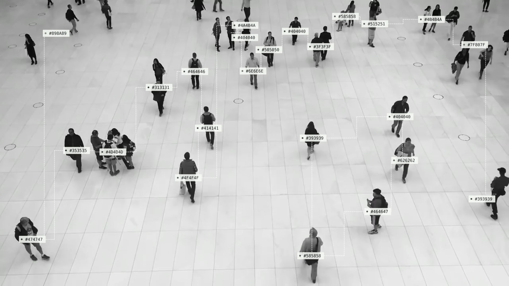

적용하고
Open FX에서 BlobHUD를 적용하고 ‘추천 설정 적용’을 누르세요.
QUICK STARTAN OPENFX TOOL FOR DAVINCI RESOLVE
작은 디테일이 만드는, 다른 분위기.
스타일 둘러보기01 / MAKE IT YOURS
6 DESIGNS + LEGACY / MANUAL종이 위의 컬러 코드부터 정교한 프레임까지.
스타일을 골라 실제 출력 예시를 확인해 보세요.

감지한 영역의 평균 색을 종이 라벨과 HEX 코드로 표시합니다.
직선·곡선·직각, 실선·점선·도트.
모양과 패턴을 따로 조합하세요.
종이 라벨에 평균 입력 RGB를 표시합니다.
HEX 코드와 컬러 점이 함께 움직여요.
밝기·색상과 감지·제외 범위를 조절하고,
라벨 위치와 요소별 진하기를 다듬으세요.
02 / FROM FOOTAGE TO GRAPHIC
추천 설정으로 시작하고, 감지 대상을 고르세요.
흔들림이 신경 쓰일 땐 구간을 먼저 분석해요.
Open FX에서 BlobHUD를 적용하고 ‘추천 설정 적용’을 누르세요.
QUICK START‘감지 영역 확인’을 켜서 기준을 맞춘 뒤, 끄고 디자인을 고르세요.
DETECT & DESIGN필요한 구간을 사전 분석해 박스와 색의 변화를 완화하고 프로젝트를 저장하세요.
ANALYZE & SAVE사전 분석은 기하학적 영역 대응 방식입니다. AI 물체 추적은 아니며, 빠른 움직임·교차·가림에서는 번호가 바뀔 수 있어요.
03 / YOUR NEXT FRAME
운영체제와 언어를 선택하세요.
설치 파일과 사용 안내서가 함께 들어 있어요.
macOS 12 이상 · Apple Silicon 맥
ZIP 다운로드217 KB개발자 서명·Apple 공증이 없는 LOCAL 빌드입니다. 다른 맥에서 보안 경고나 설치 차단이 발생할 수 있습니다.
압축 해제 후 Install 패키지를 실행하세요. 제거용 패키지도 포함돼 있어요.
A FEW THINGS TO KNOW
한 번에 한 언어만 설치합니다. 다른 언어의 같은 버전을 설치하면 기존 플러그인을 교체하며, 설정 ID와 저장 분석 형식은 공유합니다. 중요한 프로젝트는 사본을 저장하고 확인해 주세요.
현재 맥 파일은 개발자 서명·Apple 공증이 없고, Windows 파일도 코드 서명이 없습니다. 보안 경고나 차단이 생길 수 있습니다. 운영체제의 보안 기능을 일괄 해제하지 마세요.
종이 라벨은 감지 영역의 평균 입력 RGB를 표시합니다. 자동 색 공간 변환은 없으며, 표시 변환 뒤의 값과 다를 수 있어요. 저장 분석에서는 색상 평활화도 적용될 수 있습니다.
박스가 없으면 자동 감지와 감지 영역 확인을 켜서 밝기·색·면적 기준을 맞춰 보세요. 재생이 무거우면 표시 개수와 연결 수를 줄이거나 1/2·1/4 재생 해상도를 사용하세요. 최종 출력은 원래 해상도로 확인합니다.
감지·안정화 설정, 원본 영상, 속도·리타임 또는 상위 효과·색보정을 바꾼 뒤 다시 분석하세요. 연결 대상 유지를 켠 상태에서 거리·연결 수를 바꿔도 재분석해야 합니다. 스타일·라벨 배치·선 패턴은 바로 바꿀 수 있어요.
ZIP 전체를 압축 해제하고 Run_Checks.cmd를 실행하세요. 실패하면 설치를 멈추고 생성된 Check_Result.txt를 제작자에게 전달해 주세요. 개발 도구나 관리자 권한 없이 임시 폴더에서 검사합니다.